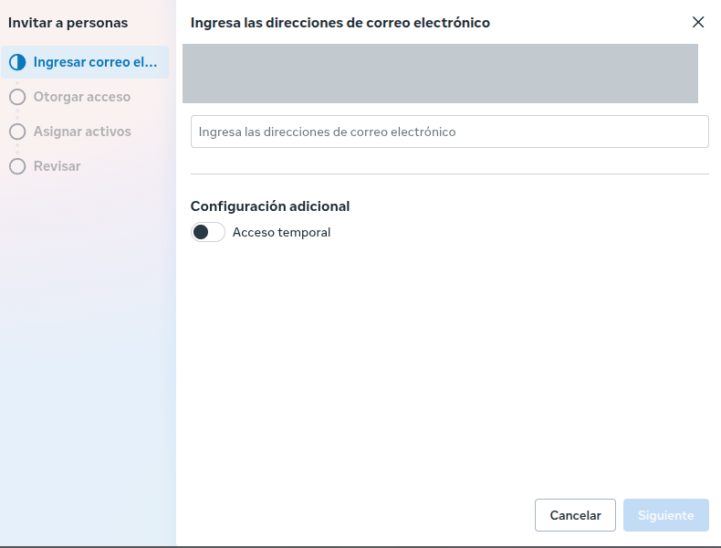
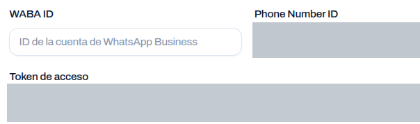

Rafael · Guía visual de conexión
Tu WhatsApp en el CRM.
Paso a paso, sin Tech Provider.
Esta guía acompaña el Asistente de conexión de 7 pasos que ya está en Ajustes → WhatsApp. Podés hacerlo con ayuda, sin entregar tu contraseña de Facebook.
Alta manual · Cloud APIApp propia del negocioFacturación del clienteEste recorrido NO es la conexión por QR que conserva el WhatsApp del celular. Si querés mantener tu número actual en el teléfono, no lo borres ni lo migres: frená y coordiná coexistencia oficial cuando esté habilitada, o una segunda línea para la conexión manual.
Ir directamente a un paso
Hay capturas reales recortadas y con datos ocultos. Los diagramas están identificados como esquemas: no son capturas de pantallas ni pruebas de que una cuenta esté conectada.
Edición 23/11/2026. No contiene tokens, contraseñas, teléfonos, correos ni identificadores reales de las cuentas usadas como ejemplo. Los nombres de los menús de Meta pueden variar.
Paso 1 de 7 · Lo hace Rafael o Julia
Entrá al negocio correcto en Meta
El “portfolio comercial” es la carpeta de tu negocio en Meta. Todo lo que vamos a conectar tiene que quedar dentro de esa carpeta.
¿Preferís que te ayudemos?
Podés invitarnos a Meta para la configuración. Es opcional y no conecta WhatsApp por sí solo. La página siguiente explica cómo, sin compartir tu clave.
En Vocero, Rafael y Julia pueden abrir Ajustes → WhatsApp con una cuenta que tenga permiso de administración. La clave del CRM no es la clave de Facebook.
Ayuda opcional · No es un paso adicional del CRM
Invitá a quien te ayuda
No uses “Buscar personas” para invitar: ese campo sólo filtra la lista. Primero abrí Usuarios → Personas → Invitar a personas.
CAPTURA REAL · primer paso de la invitación

- Ingresar correo: poné dentro del modal el correo que te confirme la persona que te ayuda. No copies un correo de ejemplo. Tocá Siguiente.
- Otorgar acceso: elegí acceso parcial/empleado cuando alcance. Si la tarea requiere control total del portfolio, primero coordiná el motivo: da acceso amplio al negocio.
- Asignar activos: seleccioná únicamente la app y la cuenta de WhatsApp necesarias. “Acceso total” a esos activos no equivale a control total de todo el portfolio.
- Revisar: verificá correo y permisos antes de enviar. La otra persona tiene que aceptar la invitación. Al terminar, revisá o retirale el acceso que ya no necesite.
Paso 2 de 7 · Puede hacerse con asistencia
Usá una app propia de tu negocio
No es una app para instalar en el celular: es la conexión técnica entre tu cuenta de Meta y el CRM.
- Abrí Mis apps de Meta con la misma cuenta del paso 1. Si Meta pide registro de desarrollador, completalo como titular.
- Si ya tenés una app de WhatsApp de ese negocio, revisala con quien te ayuda antes de crear otra. Si no existe, elegí Crear app.
- Indicá un nombre identificable y tu correo de contacto. Elegí el caso de uso Conectar con clientes a través de WhatsApp.
- Seleccioná el portfolio de tu negocio. Revisá los requisitos que Meta muestre y terminá la creación.
- En el panel buscá WhatsApp → API Setup / Configuración de la API. En el diseño nuevo puede estar dentro de Casos de uso → Personalizar.
ESQUEMA ORIENTATIVO · no es captura
No cambies ni elimines una app existente para “probar”. Si no está claro a quién pertenece, frená y pedí una revisión.
Paso 3 de 7 · Cuenta y facturación del cliente
Identificá tu cuenta de WhatsApp
La cuenta agrupa los números del negocio. En el CRM este dato se llama WABA ID; en pantallas nuevas Meta también puede decir “Messaging account”.
- En tu app, abrí API Setup / Configuración de la API. Seleccioná la cuenta del negocio o seguí la creación de una cuenta propia si todavía no existe.
- Copiá el WhatsApp Business Account ID de la cuenta vinculada a la API. Guardalo en el campo del paso 3 del CRM.
- Confirmá que estás usando una cuenta para Cloud API. Que aparezca una cuenta de la app WhatsApp Business del celular no prueba que ya pueda usarse por API.
- No elijas el número ni la cuenta Test / de prueba para la operación real de Rafael.
ESQUEMA · dónde va cada dato
Para que la factura quede de tu lado
- En Meta abrí Facturación y pagos → Configuración de pagos. Elegí la cuenta de WhatsApp/mensajería correcta.
- El titular carga su propio método de pago. No alcanza con tener una tarjeta en una cuenta publicitaria distinta.
- Antes de confirmar, revisá país, moneda, negocio y cuenta. Si Meta avisa que no se pueden cambiar después, no avances con un valor incorrecto.
Paso 4 de 7 · Decisión del titular
Registrá el número correcto.
No pierdas tu WhatsApp actual.
No borres la cuenta ni pidas su baja siguiendo esta guía. El registro estándar en Cloud API no es coexistencia y el historial del celular no se importa automáticamente al CRM.
Quiero conservar el número en el celular
Necesitás un alta de coexistencia oficial habilitada. Se coordina aparte, con el proveedor aprobado o con un BSP compatible y su integración. El formulario manual no fabrica ese permiso.
Otra opción: conservar ese WhatsApp y destinar una segunda línea al CRM.
Tengo una línea para usar sólo en el CRM
Podés seguir por el alta manual si Meta la acepta y el titular tiene acceso a los SMS o llamadas de esa línea.
El chip mantiene su servicio de llamadas/SMS; la atención de WhatsApp queda en el CRM.
Sólo después de confirmar la línea
- En tu app → API Setup o WhatsApp Manager → Números, abrí Agregar número de teléfono.
- Ingresá país, número y los datos reales del perfil que Meta solicite.
- El titular completa la verificación por SMS o llamada. No envíes el código por chat. Si aparece un PIN de registro, guardalo en un lugar seguro.
- Copiá el Phone Number ID al paso 4 del CRM. Es el identificador largo de Meta, no tu teléfono.
- Si el estado queda pendiente o desconectado, quien te ayuda debe completar el registro. Tener el ID todavía no prueba que el emisor funcione.
Paso 5 de 7 · Parte A
Creá la llave del CRM:
un usuario del sistema
El “usuario del sistema” es una cuenta técnica. No reemplaza tu Facebook ni recibe tu contraseña.
- En Configuración del negocio → Usuarios, abrí Usuarios del sistema. Reutilizá uno dedicado al CRM si ya está configurado; si no, tocá Agregar y elegí un nombre identificable.
- Elegí el rol de menor acceso que permita esta tarea. Si sólo funciona con Administrador o faltan permisos, que el administrador del negocio lo revise; no des acceso total a personas sin necesidad.
- Seleccioná el usuario del sistema del CRM y abrí Asignar activos. Elegí sólo los dos activos de abajo y habilitá su administración.
ESQUEMA ORIENTATIVO · no es una captura
Asignar activos: qué seleccionar
- 1. AppsElegí la app de tu negocio (ver paso 2: tu app de Meta).Permiso: Acceso total a esa app.
- 2. Cuentas de WhatsAppElegí la cuenta con tu WABA ID (ver paso 3: tu cuenta de WhatsApp). En Meta puede decir «WhatsApp accounts».Permiso: Acceso total a esa cuenta.
Paso 5 de 7 · Parte B
Generá el token y cuidalo como una clave
El token es la llave que usará el CRM. Lo genera Meta; no se inventa y no se manda por WhatsApp.
- Con el usuario del sistema seleccionado, tocá Generar token y elegí la app de tu negocio.
- Si Meta ofrece vencimiento, elegí sin vencimiento para el uso permanente. Si no aparece, anotá la vigencia y pedí asistencia; no supongas que cualquier token es permanente.
- Marcá los permisos del siguiente esquema. Si el diálogo también pide activos, seleccioná expresamente la cuenta correspondiente.
- Generalo, guardalo en un gestor seguro y pegalo directamente en el paso 6 del CRM. Evitá capturas y correos con el valor.
ESQUEMA DE PERMISOS · nombres exactos de Meta
business_managementAdministración de activos del negocio.
whatsapp_business_managementAdministrar la cuenta de WhatsApp.
whatsapp_business_messagingEnviar mensajes por WhatsApp.
Si Meta no te deja generarlo
Revisá que el usuario del sistema tenga la app y la WABA asignadas. Si aparece un error de acceso avanzado a una cuenta de otro negocio, no se resuelve generando tokens una y otra vez: hay que revisar la titularidad y qué app estás usando.
Paso 6 de 7 · En el CRM de Rafael
Pegá los datos.
Primero probá; después guardá.
- Volvé a Ajustes → WhatsApp en Vocero. En el Asistente de conexión, abrí el paso 6. Si ya tenés todo, usá Ya tengo los datos.
- Pegá cada dato en su campo, como se indica abajo. Si el navegador autocompleta un correo o una contraseña guardada, quitá ese autocompletado: esos datos no sirven para WhatsApp.
- Tocá Probar conexión. Confirmá que el número reconocido por Meta sea el que querés usar.
- Recién entonces tocá Guardar conexión. Si aparece otro número o un error, no guardes: revisá los IDs, el token y sus permisos.
CAPTURA REAL · formulario del CRM

| Campo del CRM | Qué tenés que pegar |
|---|---|
| WABA ID | ID de la cuenta de WhatsApp del paso 3. |
| Phone Number ID | ID del número obtenido en el paso 4. No el número de teléfono ni un correo. |
| Token de acceso | Token generado en el paso 5. No tu contraseña del CRM. |
Paso 7 de 7 · Con quien administra el servidor
Conectá la entrada de mensajes
y probá las dos puntas
El “webhook” es la dirección donde Meta entrega los mensajes. El CRM muestra la URL y el código de verificación; no hace falta inventarlos.
- En el paso 7 del CRM copiá la URL del webhook y el verify token hacia el panel de tu app → WhatsApp → Configuration / Configuración → Webhooks.
- Verificá y guardá en Meta. Suscribí el campo messages. La persona técnica debe comprobar también que esa app esté suscrita a la WABA correcta.
- Quien administra el servidor configura y verifica META_APP_SECRET de la app del cliente. Que exista un secreto de la app del proveedor no alcanza: debe coincidir con la app que envía los eventos. No se comparte por chat ni se desactiva la firma.
- Desde otro teléfono real, enviá un mensaje al número conectado. Comprobá que aparezca una sola vez en la Bandeja.
- Respondé desde la Bandeja del CRM. Mirá el otro teléfono: la respuesta tiene que llegar, no sólo figurar como aceptada o enviada.
ESQUEMA DE LA PRUEBA · no es un estado de conexión
Si algo no coincide · No adivines
Qué hacer cuando te trabás
| Lo que ves | Qué hacer |
|---|---|
| No aparece tu negocio | Confirmá el Facebook usado y los permisos del portfolio. No crees otro para salir del paso. |
| No ves Usuarios del sistema o Generar token | Pedile al administrador del negocio que revise rol, app y activos asignados. |
| Meta pide borrar tu WhatsApp | Frená. Es el alta estándar, no coexistencia. Revisá la decisión del paso 4. |
| Error de permisos / acceso avanzado | Revisá la app y la titularidad de los activos. Dar acceso a una persona no aprueba una app proveedora. |
| Probar conexión pasa, pero no entran mensajes | Revisar webhook, suscripción, App Secret correcto y un mensaje entrante real. |
| Dejó de enviar después | Revisar si el token venció o fue revocado; también estado del número, pago y ventana de atención. |
| Ves un botón “Conectar con WhatsApp” | Es otro recorrido. Que se vea el botón no prueba aprobación ni elegibilidad para coexistencia. |
Lista final para cerrar con quien te ayuda
- Portfolio, app y cuenta de WhatsApp pertenecen al negocio del cliente.
- Número elegido y consecuencias confirmadas por el titular.
- Pago revisado en la cuenta de WhatsApp correcta.
- Token del usuario del sistema y activos verificados.
- Webhook y firma de la app correcta configurados.
- Mensaje real recibido en el CRM y respuesta recibida en el celular.
Para pedir ayuda podés usar “Pasarle esto a quien me ayuda”. Revisá el resumen: que diga “guardada” no reemplaza la prueba de ida y vuelta. Compartí el nombre del paso y el error, sin token, claves, códigos ni datos de tarjeta.
Meta · Cloud API: app, cuenta, usuario del sistema y permisos
Meta · Coexistencia: recorrido separado para conservar la app del celular
No se creó, invitó, migró ni desconectó ninguna cuenta o número para producir esta guía. Las ilustraciones no representan autorizaciones de Rafael ni una aprobación Tech Provider.